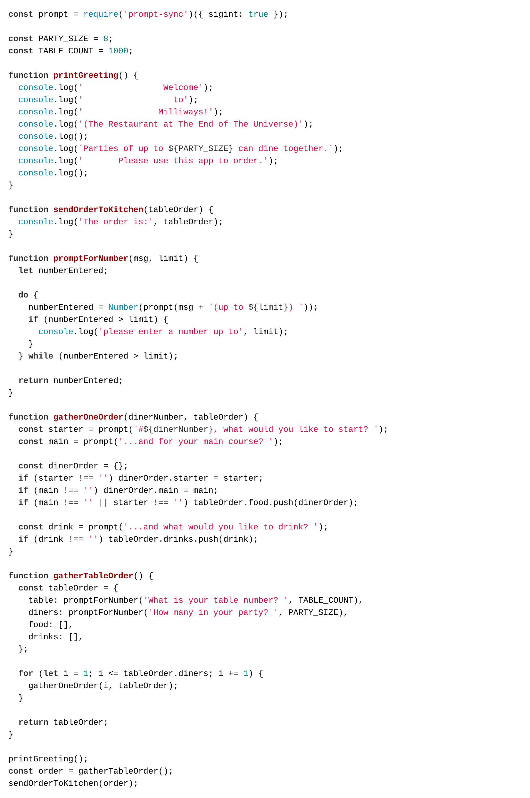

You are not registered and cannot track your progress
This page has the final code from our session on programming locally and using loops and functions.
Typing code helps you learn, so rather than giving you text to copy and paste the code is an image that you must read, hold in your mind, type in to your editor and then manually check for accuracy.
When we type, we make mistakes and that's OK – finding what we've done wrong is part of programming so this is a useful experience.
Always test your program with a few different inputs to see that it behaves as expected.
As always, we encourage your feedback on the process and the examples.
Going from very repetitive code (see it in Repl.it), we turned the code into more maintainable and readable version that uses loops and functions.
As a challenge, see if you can make promptForNumber() even
smarter so it nicely rejects numbers less than 1, or fractional numbers, or
input that's not a number at all.